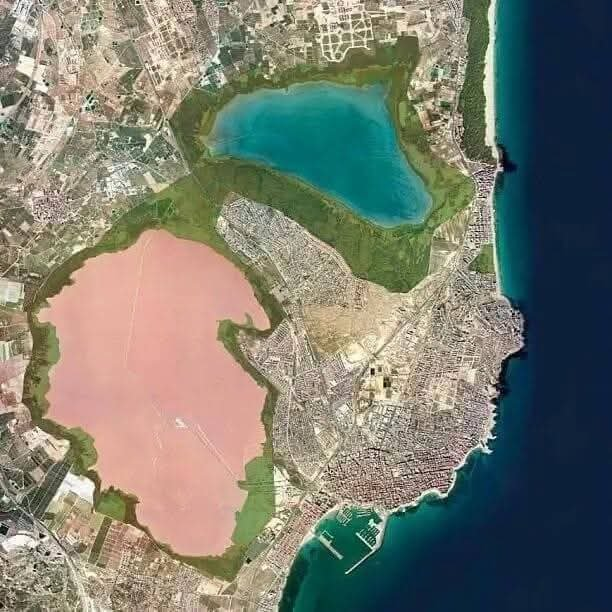

Elhelyezkedés
Közel mindenhez, ami egy tökéletes nyaraláshoz kell.

🌊
Tengerparti közelség
Az apartman 60 méterre helyezkedik el a csodás, fél km hosszú Los Locos fehér homokos parttól! Itt nem kell „lemenned” a tengerpartra, mert szinte már ott vagy.
📍
Kitűnő elhelyezkedés
A szintén népszerű Cura part is pár perc, a buszmegálló, a belváros és a kikötő is sétatávolságra van. Éttermek, üzletek és bárok a környéken mindenütt megtalálhatók.
🌴
Torrevieja hangulata
Fedezd fel a város hangulatát, a pálmafás sétányokat és a mediterrán életérzést.
Torrevieja képek →